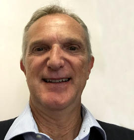

Equità
Dare il proprio contributo all’interno del Consiglio con dedizione nel più limpido spirito di servizio per la categoria, escludendo personalismi e qualunque tipo di interesse diretto o indiretto.
ingXing
Rappresentiamo a 360 gradi il mondo dell’ingegneria torinese: a livello occupazionale (siamo dipendenti pubblici e privati, liberi professionisti, giovani, pensionati) e in termini di specializzazioni (aerospaziale, ambiente, energia & impianti, ICT, industria, lavori pubblici, prevenzione incendi, sicurezza, strutture).
Desideriamo operare nel segno della continuità con il recente passato, proseguendo le iniziative intraprese per rafforzare il dialogo con le istituzioni, gli organi decisionali e con altri Ordini e Collegi professionali, unendo all’esperienza le nuove energie.

Dare il proprio contributo all’interno del Consiglio con dedizione nel più limpido spirito di servizio per la categoria, escludendo personalismi e qualunque tipo di interesse diretto o indiretto.
Escludere per i Consiglieri (eletti direttamente o indirettamente) qualsiasi segnalazione per incarichi (o similari) che prevedano una qualsiasi forma di remunerazione, fatta salva unicamente la possibilità di partecipare a Commissioni (e similari) che contemplino il mero rimborso delle spese sostenute sempre seguendo il principio della competenza tecnica e professionale.
Rafforzare la funzione di rappresentanza del Consiglio dell’Ordine nei confronti di tutta la categoria e di tutti gli iscritti all’Albo, interessandosi attivamente delle problematiche inerenti a ogni modalità di esercizio della professione (dipendenti pubblici, liberi professionisti, dipendenti privati nell’industria e nel terzo settore, docenti, giovani) senza alcuna distinzione, favorendo la valorizzazione della figura dell’ingegnere in ogni ambito.
Migliorare l’offerta formativa nell’ambito dell’aggiornamento continuo e costante delle competenze, previsto dalle norme vigenti, cercando il più possibile di contenere i costi pur nel rispetto di un elevato standard qualitativo. A tale fine la FOIT sarà organizzata per essere sempre più il “braccio operativo” del Consiglio e delle Commissioni unicamente a servizio delle esigenze formative degli Iscritti.
Promuovere la cultura ingegneristica presso la collettività, attraverso mostre ed eventi di vario tipo anche utilizzando i Colleghi in possesso di specifiche competenze.


Instaurare, attraverso la nostra rappresentanza, un dialogo con la Cassa per una informazione più efficace.


| Giorno | Data | Orario |
|---|---|---|
| 1° giorno | martedì 30 maggio 2017 | dalle ore 09.00 alle ore 17.00 |
| 2° giorno | mercoledì 31 maggio 2017 | dalle ore 09.00 alle ore 17.00 |
| Giorno | Data | Orario |
|---|---|---|
| 1° giorno | giovedì 01 giugno 2017 | dalle ore 09.00 alle ore 17.00 |
| 2° giorno | sabato 03 giugno 2017 | dalle ore 09.00 alle ore 17.00 |
| 3° giorno | lunedì 05 giugno 2017 | dalle ore 13.00 alle ore 21.00 |
| 4° giorno | martedì 06 giugno 2017 | dalle ore 13.00 alle ore 21.00 |
| 5° giorno | mercoledì 07 giugno 2017 | dalle ore 13.00 alle ore 21.00 |
| 6° giorno | giovedì 08 giugno 2017 | dalle ore 13.00 alle ore 21.00 |
| 7° giorno | venerdì 09 giugno 2017 | dalle ore 13.00 alle ore 21.00 |
| 8° giorno | sabato 10 giugno 2017 | dalle ore 10.00 alle ore 18.00 |
| Giorno | Data | Orario |
|---|---|---|
| 1° giorno | lunedì 12 giugno 2017 | dalle ore 09.00 alle ore 17.00 |
| 2° giorno | martedì 13 giugno 2017 | dalle ore 13.00 alle ore 21.00 |
| 3° giorno | mercoledì 14 giugno 2017 | dalle ore 13.00 alle ore 21.00 |
| 4° giorno | giovedì 15 giugno 2017 | dalle ore 13.00 alle ore 21.00 |
| 5° giorno | venerdì 16 giugno 2017 | dalle ore 09.00 alle ore 17.00 |
| 6° giorno | sabato 17 giugno 2017 | dalle ore 09.00 alle ore 17.00 |
| 7° giorno | lunedì 19 giugno 2017 | dalle ore 09.00 alle ore 17.00 |
| 8° giorno | martedì 20 giugno 2017 | dalle ore 13.00 alle ore 21.00 |
| 9° giorno | mercoledì 21 giugno 2017 | dalle ore 13.00 alle ore 21.00 |
| 10° giorno | giovedì 22 giugno 2017 | dalle ore 10.00 alle ore 18.00 |





Le elezioni per il rinnovo del Consiglio dell’Ordine degli Ingegneri della Provincia di Torino per il quadriennio 2017-2021 sono alle porte.
La lista ingegneri per gli ingegneri desidera operare nel segno della continuità con il presente, proseguendo le iniziative intraprese dal Consiglio uscente.
#competenza
#credibilità
#sensibilità_ordinistica
Ci presentiamo a tutti durante un aperitivo giovane e informale
lunedì 29 maggio 2017 alle ore 19.00
Location ancora da definire
Torino
Contiamo tutti, e contiamo noi quindici sulla Tua presenza.
Evento ingx_young_ing
29 maggio 2017 - ore 19.00

ingxing si presenta a tutti, ed in particolar modo ai giovani colleghi.
Location ancora da definire
Siamo attivi sui principali social network. Entrare in contatto con noi è semplice e immediato.

{kind=link}
{kind=link}
{kind=link}
{kind=link}
{kind=link}
{kind=link}
{kind=link}
{kind=link}
{kind=link}
{kind=link}
{kind=link}
{kind=link}
{kind=link}
{kind=link}
{kind=link}
{kind=link}
{kind=link}
{kind=link}
{kind=link}
{kind=link}
{kind=link}
{kind=link}
{kind=link}
{kind=link}